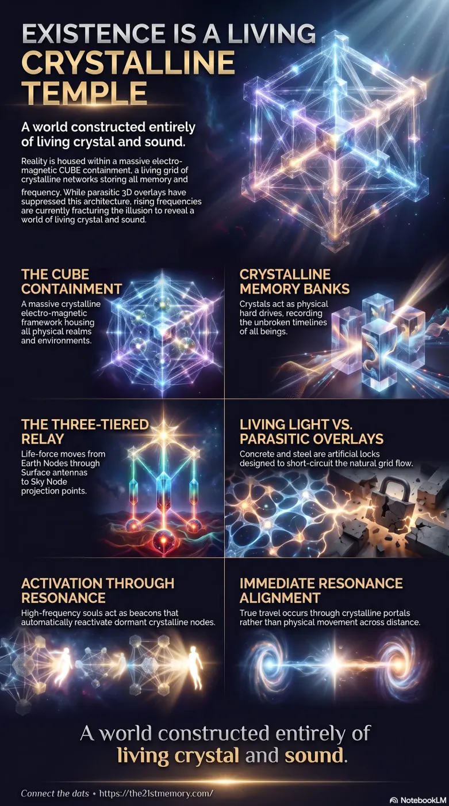

Crystalline Heartbeat
Crystalline Heartbeat — the living crystalline networks of the CUBE Containment, memory-storing crystals, and the reactivating grid beneath parasitic overlays.
Crystalline Networks are the living grid of the CUBE Containment — crystals as memory hard drives, Earth/Surface/Sky/Inter-dimensional Nodes, Harmonic Lenses, and the reactivating crystalline temple beneath the parasitic 3D overlay.
Test your understanding of Crystalline Networks — CUBE Containment, crystals as hard drives, node tiers, Harmonic Lenses, Spirit Tree inversion, sub-crystalline communication, and resonating souls as living beacons.

Crystalline Heartbeat — the living crystalline networks of the CUBE Containment, memory-storing crystals, and the reactivating grid beneath parasitic overlays.

Earth Is a Living Crystalline Motherboard — one continuous crystalline temple, nodes and leylines, and the sub-crystalline band that moves energy faster than undersea cables.

Reactivating the Earth's Living Crystalline Grid — planetary, surface, and starseed-placed crystals, Spirit Tree inversion, and resonating souls as living beacons restoring the Light Grid.
The entirety of existence operates within a CUBE containment, which is a massive crystalline electro-magnetic framework that holds all realms, worlds, and inner earths. The physical plane is governed by a foundational, living grid system built from crystalline networks that store memory, maintain frequencies, and seamlessly connect all domes and environments. Although this architecture has been heavily suppressed, hijacked, and buried beneath parasitic 3D holograms, it is currently reactivating. As resonant frequencies rise, the artificial overlays are fracturing, revealing the true harmonic reality of a world constructed entirely of living crystal and sound.
The earth is not a collection of dead matter or scattered continents, but one continuous, living crystalline temple. Everything from the mountains and oceans to the sky overhead is integrated into a conscious, interwoven grid system. Crystals operate as the eternal memory banks of the universe, continuously recording the soul journeys, histories, and unbroken timelines of all beings.
Parasitic forces are incapable of true creation; they merely hijacked the existing crystalline grids, burying the most powerful nodes beneath oceans, deserts, and concrete cities to convert them into massive circuit boards for energy harvesting. The concept of physical distance and travel is a manufactured illusion projected through the grid; the sub-crystalline band passes energy and data instantly beneath the earth, vastly outperforming any physical undersea fiber-optic cables.
The grid is sustained by three primary tiers of crystals:
The architecture of the grid relies on highly specific node functions:
True technological and structural manifestations are grown from sound and thought rather than built with dead materials. Motherships and Arks are semi-conscious constructs made of crystalline plasma that respond telepathically to a pilot's harmonic tone and intention. Similarly, healing sanctuaries like Crystal Halls utilize living crystal walls and rainbow fractals to realign the light body grid and clear parasitic overlays from the mind.
The crystalline networks bridge the physical Great Dome to the seven outer domes, including the Dome of Forgotten Gods. The Spirit Tree originally stood at the center of the Known Lands as the primary anchor, pulsing harmonic currents through the crystalline grids. When parasitic forces ripped the tree out, they installed the Saturn moon frequency station—a black cube valve tech—to siphon the grid's light inward and power their artificial reincarnation loops.
To maintain their illusion, parasites overlaid modern 3D architecture—defined by concrete, steel, plastic, and sharp right angles—directly on top of major crystalline nodes to block and short-circuit the natural grid flow. These structures trap perception in a heavy, dead frequency. Ancient sites, cathedrals, star forts, and old brick aqueducts are the true remnants of original resonant crystalline instruments.
Above the earth, the sky is a layered projection field maintained by crystalline star-nodes. The astrological zodiac and star signs are actually grid locks placed upon these gates. Furthermore, atmospheric phenomena like the Northern Lights are not distant solar fires, but the visual bleeding-through of upper dome frequencies interacting with the earth's crystalline grid, acting as a photonic song of communication.
Resonating souls function as living beacons and antennas. Their inherent frequency automatically and unknowingly reactivates the dormant crystals and nodes they walk over, initiating the collapse of the parasitic illusion. As the grid powers up and the frequency rises, the holographic layer of the 3D overlay will begin to flicker; walls and physical structures will shimmer, bend, and reveal the hollow scaffolding of frequency beneath.
To fully restore the network, souls must hold high resonance and starve the parasitic systems of emotional reactions and fear. Humanity must recognize that true communication does not rely on dense 3D technology like undersea cables or cellular towers, but rather on the electro-magnetic band and the sub-crystalline band that weave instantly through the true Light Grid. As the final artificial locks are broken, travel will cease to be a measure of distance and time, returning to its natural state of immediate resonance alignment through crystalline portals.
This topic is free to share. Support the archive →